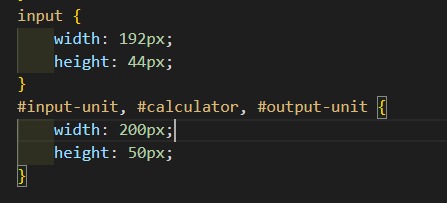

W3C(World Wide Web Consortium)에서 만든 스타일 시트 언어
CSS 공부에 유익한 사이트: CSS 공부(TCP School)
CSS 공부에 유익한 사이트: CSS 공부(MDN web docs)
CSS 공부에 유익한 사이트: CSS 공부(Daleseo)
CSS 공부에 유익한 사이트: CSS 공부(생활코딩)
".decletterspacing { letter-spacing: -3px; }"
".incletterspacing { letter-spacing: 10px; }"
배수 단위(em)는 해당 글꼴(font)의 기본 크기를 1em으로 놓고, 그에 대한 상대적인 크기를 설정합니다.
이미지 가로 정렬 : align-items:ceter;
이미지 세로 정렬 : justify-content:center;
@import "reset.css";
all:unset;
button { transition:transform ease-in-out .1s; } button:hover { transform:scale(1.05, 1.05); background-color: blue; } scale(2,2) 이 경우 버튼을 두 배 높이와 너비로 크기함. background-color를 원하는 것으로 바꿈
Flex direction 은 박스 안에서의 정렬을 하는 것으로 row는 가로로 정렬, column은 세로로 정렬이다.
justify-content 속성은 플렉스 요소의 수평 방향 정렬 방식을 설정합니다.
이 속성은 다음과 같은 속성값을 가질 수 있습니다.
1. flex-start : 기본 설정으로, 플렉스 요소는 플렉스 컨테이너의 앞쪽에서부터 배치됩니다.
2. flex-end : 플렉스 요소는 플렉스 컨테이너의 뒤쪽에서부터 배치됩니다.
3. center : 플렉스 요소는 플렉스 컨테이너의 가운데에서부터 배치됩니다.
4. space-between : 플렉스 요소는 요소들 사이에만 여유 공간을 두고 배치됩니다.
5. space-around : 플렉스 요소는 앞, 뒤, 그리고 요소들 사이에도 모두 여유 공간을 두고 배치됩니다
justify-content 속성 참고 예시
CSS gap 속성은 행과 열 사이의 간격(거터)을 설정합니다.
row-gap (en-US)과 column-gap (en-US)의 단축 속성입니다.
CSS 트랜지션은 CSS 속성을 변경할 때 애니메이션 속도를 조절하는 방법을 제공합니다. 속성 변경이 즉시 영향을 미치게 하는 대신, 그 속성의 변화가 일정 기간에 걸쳐 일어나도록 할 수 있습니다. 예를 들어, 여러분이 어떤 요소의 색상을 흰색에서 검은색으로 변경한다면, 변화는 대개 즉시 일어납니다. CSS 트랜지션을 이용하면, 모두 커스터마이즈 가능한 어떤 가속도 곡선을 따르는 시간 주기마다 변화가 일어납니다.
transition 속성은 변화하는 단계의 중간 움직임을 생성하도록 도와준다.
예를들어, select메뉴에 커서를 올려놓았을 때 뚝뚝 끊기듯 서브메뉴가 펼쳐지는 것이 아니라 자연스럽게 시간차를 두고 펼쳐지도록 해준다.
속성 적용은 최초 상태의 태그에 한다.
기본구성 transition: property duration timing-function delay;
property : 변화를 일으킬 css 속성명
duration : 변화가 얼마동안 일어나게 할지 명시하는 지속시간 (1s=1000ms)
timing-function : 변화의 속도를 지정하는 가속도 (생략가능)
ease-in : 천천히 움직이다가 나중에 빠르게
ease-out : 빠르게 움직이다가 나중에 천천히
ease-in-out : 천천히 빠르게 천천히
delay : 몇초 후에 동작할지 지정하는 지연시간
글꼴의 굵기를 지정하는 속성입니다.
normal 기본 값 (400)
bold 굵게 표현(700)
bolder 부모 요소 보다 두껍게 표현
lighter 부모 요소 보다 얇게 표현
number 100, 200, 300, 400, 500, 600, 700, 800, 900 (클수록 더 두껍게 표현)
font-weight 속성 설명
box-sizing CSS 속성은 요소의 너비와 높이를 계산하는 방법을 지정합니다.
두 개의 태크는 서로 다른 방식으로 높이와 너비를 계산하기 때문에 일률적으로 같은 높이와 너비를 정하면 크기에 차이가 생긱게 된다. 그러므로 input 태크 쪽을 조금 수정해주어야 한다.
